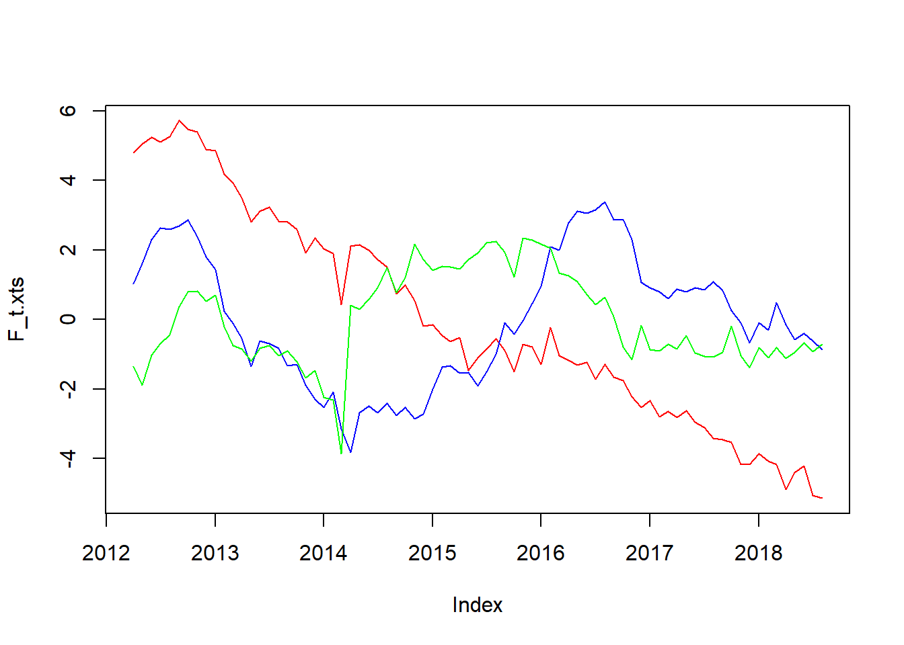
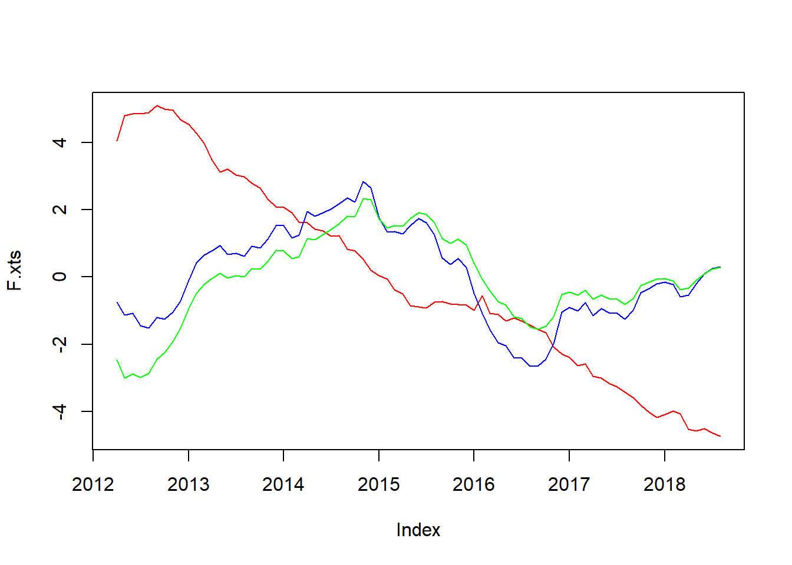
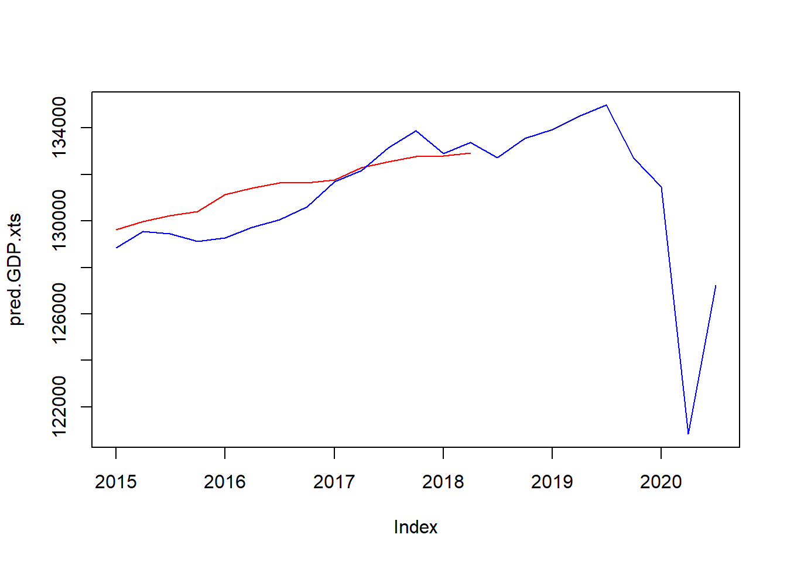
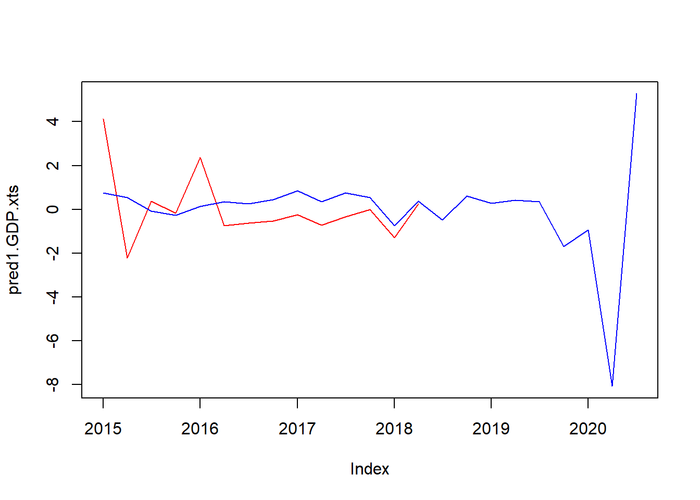

Gianonne et. al. (2008)のマルチファクターモデルで四半期GDPを予想してみた
おはこんばんにちは。 前回、統計ダッシュボードからAPI接続で統計データを落とすという記事を投稿しました。 今回はそのデータを、Gianonne et. al. (2008)のマルチファクターモデルにかけ、四半期GDPの予測を行いたいと思います。
1. Gianonne et. al. (2008)版マルチファクターモデル
前回の投稿でも書きましたが、この論文はGiannoneらが2008年にパブリッシュした論文です(JME)。彼らはアメリカの経済指標を用いて四半期GDPを日次で推計し、予測指標としての有用性を示しました。指標間の連動性(colinearity)を利用して、多数ある経済指標を2つのファクターに圧縮し、そのファクターを四半期GDPにフィッティングさせることによって高い予測性を実現しています。
まず、このモデルについてご紹介します。このモデルでは2段階推計を行います。まず主成分分析により経済統計を統計間の相関が0となるファクターへ変換します（参考）。そして、その後の状態空間モデルでの推計で必要になるパラメータをOLS推計し、そのパラメータを使用してカルマンフィルタ＆カルマンスムーザーを回し、ファクターを推計しています。では、具体的な説明に移ります。
統計データを$x_{i,t|v_j}$と定義します。ここで、$i=1,…,n$は経済統計を表し（つまり$n$が全統計数）、$t=1,…,T_{iv_j}$は統計$i$のサンプル期間の時点を表しています（つまり、$T_{iv_j}$は統計$i$のその時点での最新データ日付を表す）。また、$v_j$はある時点$j$（2005年など）で得られる情報集合（vintage）を表しています。統計データ$x_{i,t|v_j}$は以下のようにファクター$f_{r,t}$の線形結合で表すことができます（ここで$r$はファクターの数を表す）。
$$ x_{i,t|v_j} = \mu_i + \lambda_{i1}f_{1,t} + … + \lambda_{ir}f_{r,t} + \xi_{i,t|v_j} \tag{1} $$
$(\mu_i)$は定数項、$\lambda_{ir}$はファクターローディング、$\xi_{i,t|v_j}$はホワイトノイズの誤差項を表しています。これを行列形式で書くと以下のようになります。
$$ x_{t|v_j} = \mu + \Lambda F_t + \xi_{t|v_j} = \mu + \chi_t + \xi_{t|v_j} \tag{2} $$
ここで、$x_{t|v_j} = (x_{1,t|v_j}, …, x_{n,t|v_j} )^{\mathrm{T}}$、$\xi_{t|v_j}=(\xi_{1,t|v_j}, …, \xi_{n,t|v_j})^{\mathrm{T}}$、$F_t = (f_{1,t}, …, f_{r,t})^{\mathrm{T}}$であり、$\Lambda$は各要素が$ \lambda_{ij}$の$n\times r$行列のファクターローディングを表しています。また、$\chi_t = \Lambda F_t$です。よって、ファクター$ F_t$を推定するためには、データ$x_{i,t|v_j}$を以下のように基準化したうえで、分散共分散行列を計算し、その固有値問題を解けばよいという事になります。
$$ \displaystyle z_{it} = \frac{1}{\hat{\sigma}_i}(x_{it} - \hat{\mu}_{it}) \tag{3} $$
$$ \displaystyle S = \frac{1}{T} \sum_{t=1}^T z_t z_t^{\mathrm{T}} \tag{4} $$ 次に、$S$のうち、固有値を大きい順に$r$個取り出し、それを要素にした$ r \times r$対角行列を$ D$、それに対応する固有ベクトルを$n \times r$行列にしたものを$ V$と定義します。ファクター$ \tilde{F}_t$は以下のように推計できます。
$$ \tilde{F}_t = V^{\mathrm{T}} z_t \tag{5} $$ ファクターローディング$\Lambda$と誤差項の共分散行列$\Psi = \mathop{\mathbb{E}} [\xi_t\xi^{\mathrm{T}}_t]$は$\tilde{F}_t$を$z_t$に回帰することで推計します。
$$ \displaystyle \hat{\Lambda} = \sum_{t=1}^T z_t \tilde{F}^{\mathrm{T}}_t (\sum_{t=1}^T\tilde{F}_t\tilde{F}^{\mathrm{T}}_t)^{-1} = V \tag{6} $$
$$ \hat{\Psi} = diag(S - VDV) \tag{7} $$
注意して頂きたいのは、ここで推計した$\tilde{F}_t$は、以下の状態空間モデルでの推計に必要なパラメータを計算するための一時的な推計値であるという事です（２段階推計の１段階目という事）。
$$ x_{t|v_j} = \mu + \Lambda F_t + \xi_{t|v_j} = \mu + \chi_t + \xi_{t|v_j} \tag{2} $$
$$ F_t = AF_{t-1} + u_t \tag{8} $$ ここで、$u_t$は平均0、分散$H$のホワイトノイズです。再掲している(2)式が観測方程式、(8)式が遷移方程式となっています。推定すべきパラメータは$\Lambda$、$\Psi$以外に$A$と$H$があります（$\mu=0$としています）。$A$は主成分分析により計算した$\tilde{F}_t$を$VAR(1)$にかけることで推定します。
$$ \hat{A} = \sum_{t=2}^T\tilde{F}_t\tilde{F}_{t-1}^{\mathrm{T}} (\sum_{t=2}^T\tilde{F}_{t-1}\tilde{F}_{t-1}^{\mathrm{T}})^{-1} \tag{9} $$ $H$は今推計した$VAR(1)$の誤差項の共分散行列から計算します。これで必要なパラメータの推定が終わりました。次にカルマンフィルタを回します。カルマンフィルタに関してはこちらを参考にしてください。わかりやすいです。これで最終的に$\hat{F}_{t|v_j}$の推計ができるわけです。 GDPがこれらのファクターで説明可能であり（つまり固有の変動がない）、GDPと月次経済指標がjointly normalであれば以下のような単純なOLS推計でGDPを予測することができます。もちろん月次経済指標の方が早く公表されるので、内生性の問題はないと考えられます。
2. Rで実装する
では実装します。前回記事で得られたデータ（dataset）が読み込まれている状態からスタートします。まず、主成分分析でファクターを計算します。なお、前回の記事で3ファクターの累積寄与度が80%を超えたため、今回もファクター数は3にしています。
#------------------------
# Giannone et. al. 2008
#------------------------
library(xts)
library(MASS)
library(tidyverse)
# 主成分分析でファクターを計算
f <- 3 # ファクター数を定義
a <- which(dataset1$publication == "2012-04-01") # サンプル開始期間を2012年に設定。
dataset2 <- dataset1[a:nrow(dataset1),]
rownames(dataset2) <- dataset2$publication
dataset2 <- dataset2[,-2]
z <- scale(dataset2) # zは基準化されたサンプルデータ
for (i in 1:nrow(z)){
eval(parse(text = paste("S_i <- z[i,]%*%t(z[i,])",sep = "")))
if (i==1){
S <- S_i
}else{
S <- S + S_i
}
}
S <- (1/nrow(z))*S # 分散共分散行列を計算 (4)式
gamma <- eigen(S)
D <- diag(gamma$values[1:f])
V <- gamma$vectors[,1:f]
F_t <- matrix(0,nrow(z),f)
for (i in 1:nrow(z)){
eval(parse(text = paste("F_t[",i,",]<- z[",i,",]%*%V",sep = ""))) # (5)式を実行
}
F_t.xts <- xts(F_t,order.by = as.Date(row.names(z)))
plot.zoo(F_t.xts,col = c("red","blue","green","yellow","purple"),plot.type = "single") # 時系列プロット

lambda_hat <- V
psi <- diag(S-V%*%D%*%t(V)) # (7)式
R <- diag(diag(cov(z-z%*%V%*%t(V))))
推計したファクター$\tilde{F}_t$の時系列プロットは以下のようになり、前回princomp関数で計算したファクターと完全一致します（じゃあprincompでいいやんと思われるかもしれませんが実装しないと勉強になりませんので）。
次に、$VAR(1)$を推計し、パラメータを取り出します。
# VAR(1)モデルを推計
a <- matrix(0,f,f)
b <- matrix(0,f,f)
for(t in 2:nrow(z)){
a <- a + F_t[t,]%*%t(F_t[t-1,])
b <- b + F_t[t-1,]%*%t(F_t[t-1,])
}
b_inv <- solve(b)
A_hat <- a%*%b_inv # (9)式
e <- numeric(f)
for (t in 2:nrow(F_t)){
e <- e + F_t[t,]-F_t[t-1,]%*%A_hat
}
H <- t(e)%*%e
Q <- diag(1,f,f)
Q[1:f,1:f] <- H
$VAR(1)$に関してもvar関数とパラメータの数値が一致することを確認済みです。いよいよカルマンフィルタを実行します。
# カルマンフィルタを実行
RR <- array(0,dim = c(ncol(z),ncol(z),nrow(z))) # RRは観測値の分散行列（相関はないと仮定）
for(i in 1:nrow(z)){
miss <- is.na(z[i,])
R_temp <- diag(R)
R_temp[miss] <- 1e+32 # 欠損値の分散は無限大にする
RR[,,i] <- diag(R_temp)
}
zz <- z; zz[is.na(z)] <- 0 # 欠損値（NA）に0を代入（計算結果にはほとんど影響しない）。
a_t <- matrix(0,nrow(zz),f) # a_tは状態変数の予測値
a_tt <- matrix(0,nrow(zz),f) # a_ttは状態変数の更新後の値
a_tt[1,] <- F_t[1,] # 状態変数の初期値には主成分分析で推計したファクターを使用
sigma_t <- array(0,dim = c(f,f,nrow(zz))) # sigma_tは状態変数の分散の予測値
sigma_tt <- array(0,dim = c(f,f,nrow(zz))) # sigma_tは状態変数の分散の更新値
p <- ginv(diag(nrow(kronecker(A_hat,A_hat)))-kronecker(A_hat,A_hat))
sigma_tt[,,1] <- matrix(p,3,3) # 状態変数の分散の初期値はVAR(1)の推計値から計算
y_t <- matrix(0,nrow(zz),ncol(zz)) # y_tは観測値の予測値
K_t <- array(0,dim = c(f,ncol(zz),nrow(zz))) # K_tはカルマンゲイン
data.m <- as.matrix(dataset2)
# カルマンフィルタを実行
for (t in 2:nrow(zz)){
a_t[t,] <- A_hat%*%a_tt[t-1,]
sigma_t[,,t] <- A_hat%*%sigma_tt[,,t-1]%*%t(A_hat) + Q
y_t[t,] <- as.vector(V%*%a_t[t,])
S_t <- V%*%sigma_tt[,,t-1]%*%t(V)+RR[,,t]
GG <- t(V)%*%diag(1/diag(RR[,,t]))%*%V
Sinv <- diag(1/diag(RR[,,t])) - diag(1/diag(RR[,,t]))%*%V%*%ginv(diag(nrow(A_hat))+sigma_t[,,t]%*%GG)%*%sigma_t[,,t]%*%t(V)%*%diag(1/diag(RR[,,t]))
K_t[,,t] <- sigma_t[,,t]%*%t(V)%*%Sinv
a_tt[t,] <- a_t[t,] + K_t[,,t]%*%(zz[t,]-y_t[t,])
sigma_tt[,,t] <- sigma_t[,,t] - K_t[,,t]%*%V%*%sigma_tt[,,t-1]%*%t(V)%*%t(K_t[,,t])
}
F.xts <- xts(a_tt,order.by = as.Date(rownames(data.m)))
plot.zoo(F.xts, col = c("red","blue","green","yellow","purple"),plot.type = "single") # 得られた推計値を時系列プロット

カルマンフィルタにより推計したファクターの時系列プロットが以下です。遷移方程式がAR(1)だったからかかなり平準化された値となっています。
では、この得られたファクターをOLSにかけます。
# 得られたファクターとGDPをOLSにかける
F_q <- as.data.frame(a_tt[seq(3,nrow(a_tt),3),]) # 四半期の終わり月の値だけを引っ張ってくる
colnames(F_q) <- c("factor1","factor2","factor3")
colnames(GDP) <- c("publication","GDP")
t <- which(GDP$publication=="2012-04-01")
t2 <- which(GDP$publication=="2015-01-01") # 2012-2q~2015-1qまでのデータが学習データ、それ以降がテストデータ
GDP_q <- GDP[t:nrow(GDP),]
dataset.q <- cbind(GDP_q[1:(t2-t),],F_q[1:(t2-t),])
test <- lm(GDP~factor1 + factor2 + factor3,data=dataset.q)
summary(test)
##
## Call:
## lm(formula = GDP ~ factor1 + factor2 + factor3, data = dataset.q)
##
## Residuals:
## Min 1Q Median 3Q Max
## -1079.4 -779.4 -265.2 905.9 1280.0
##
## Coefficients:
## Estimate Std. Error t value Pr(>|t|)
## (Intercept) 129440.3 3784.8 34.200 4.74e-09 ***
## factor1 -776.3 846.0 -0.918 0.389
## factor2 -699.0 2358.8 -0.296 0.776
## factor3 552.3 1588.2 0.348 0.738
## ---
## Signif. codes: 0 '***' 0.001 '**' 0.01 '*' 0.05 '.' 0.1 ' ' 1
##
## Residual standard error: 1109 on 7 degrees of freedom
## Multiple R-squared: 0.6667, Adjusted R-squared: 0.5239
## F-statistic: 4.668 on 3 and 7 DF, p-value: 0.04279
out_of_sample <- cbind(GDP_q[(t2-t+1):nrow(GDP_q),],F_q[(t2-t+1):nrow(GDP_q),]) # out of sampleのデータセットを作成
test.pred <- predict(test, out_of_sample, interval="prediction")
pred.GDP.xts <- xts(cbind(test.pred[,1],out_of_sample$GDP),order.by = out_of_sample$publication)
plot.zoo(pred.GDP.xts,col = c("red","blue"),plot.type = "single") # 予測値と実績値を時系列プロット

OLSの推計結果はfactor1（赤）とfactor2（青）が有意との結果。前回の投稿でも言及したように、factor1（赤）はリスクセンチメントを表していそうなので、係数の符号が負であることは頷ける。ただし、factor2（青）も符号が負なのではなぜなのか…。このファクターは生産年齢人口など経済の潜在能力を表していると思っていたのに。かなり謎。まあとりあえず予測に移りましょう。このモデルを使用したGDPの予測値と実績値の推移はいかのようになりました。直近の精度は悪くない？
というか、これ完全に単位根の問題を無視してOLSしてしまっているな。ファクターもGDPも完全に単位根を持つけど念のため単位根検定をかけてみます。
library(tseries)
adf.test(F_q$factor1)
##
## Augmented Dickey-Fuller Test
##
## data: F_q$factor1
## Dickey-Fuller = -2.832, Lag order = 2, p-value = 0.2554
## alternative hypothesis: stationary
adf.test(F_q$factor2)
##
## Augmented Dickey-Fuller Test
##
## data: F_q$factor2
## Dickey-Fuller = -2.5433, Lag order = 2, p-value = 0.3654
## alternative hypothesis: stationary
adf.test(F_q$factor3)
##
## Augmented Dickey-Fuller Test
##
## data: F_q$factor3
## Dickey-Fuller = -2.5795, Lag order = 2, p-value = 0.3516
## alternative hypothesis: stationary
adf.test(GDP_q$GDP)
##
## Augmented Dickey-Fuller Test
##
## data: GDP_q$GDP
## Dickey-Fuller = -0.25589, Lag order = 3, p-value = 0.9867
## alternative hypothesis: stationary
はい。全部単位根もってました…。階差をとったのち、単位根検定を行います。
GDP_q <- GDP_q %>% mutate(growth.rate=(GDP/lag(GDP)-1)*100)
F_q <- F_q %>% mutate(f1.growth.rate=(factor1/lag(factor1)-1)*100,
f2.growth.rate=(factor2/lag(factor2)-1)*100,
f3.growth.rate=(factor3/lag(factor3)-1)*100)
adf.test(GDP_q$growth.rate[2:NROW(GDP_q$growth.rate)])
##
## Augmented Dickey-Fuller Test
##
## data: GDP_q$growth.rate[2:NROW(GDP_q$growth.rate)]
## Dickey-Fuller = -2.5299, Lag order = 3, p-value = 0.368
## alternative hypothesis: stationary
adf.test(F_q$f1.growth.rate[2:NROW(F_q$f1.growth.rate)])
##
## Augmented Dickey-Fuller Test
##
## data: F_q$f1.growth.rate[2:NROW(F_q$f1.growth.rate)]
## Dickey-Fuller = -2.5185, Lag order = 2, p-value = 0.3748
## alternative hypothesis: stationary
adf.test(F_q$f2.growth.rate[2:NROW(F_q$f2.growth.rate)])
##
## Augmented Dickey-Fuller Test
##
## data: F_q$f2.growth.rate[2:NROW(F_q$f2.growth.rate)]
## Dickey-Fuller = -2.498, Lag order = 2, p-value = 0.3827
## alternative hypothesis: stationary
adf.test(F_q$f3.growth.rate[2:NROW(F_q$f3.growth.rate)])
##
## Augmented Dickey-Fuller Test
##
## data: F_q$f3.growth.rate[2:NROW(F_q$f3.growth.rate)]
## Dickey-Fuller = -3.3479, Lag order = 2, p-value = 0.08501
## alternative hypothesis: stationary
factor1だけは5%有意水準で帰無仮説を棄却できない…。困りました。有意水準を10%ということにして、とりあえず階差でOLSしてみます。
dataset.q <- cbind(GDP_q[1:(t2-t),],F_q[1:(t2-t),])
colnames(dataset.q) <- c("publication","GDP","growth.rate","factor1","factor2","factor3","f1.growth.rate","f2.growth.rate","f3.growth.rate")
test1 <- lm(growth.rate~f1.growth.rate + f2.growth.rate + f3.growth.rate,data=dataset.q)
summary(test1)
##
## Call:
## lm(formula = growth.rate ~ f1.growth.rate + f2.growth.rate +
## f3.growth.rate, data = dataset.q)
##
## Residuals:
## Min 1Q Median 3Q Max
## -1.1822 -0.2944 -0.1403 0.3495 1.2200
##
## Coefficients:
## Estimate Std. Error t value Pr(>|t|)
## (Intercept) -0.1900410 0.3956316 -0.480 0.648
## f1.growth.rate -0.0138647 0.0122615 -1.131 0.301
## f2.growth.rate -0.0044379 0.0036015 -1.232 0.264
## f3.growth.rate -0.0007179 0.0006337 -1.133 0.300
##
## Residual standard error: 0.7832 on 6 degrees of freedom
## ( 1 個の観測値が欠損のため削除されました )
## Multiple R-squared: 0.3447, Adjusted R-squared: 0.01705
## F-statistic: 1.052 on 3 and 6 DF, p-value: 0.4357
推計結果がわるくなりました…。予測値を計算し、実績値とプロットしてみます。
out_of_sample1 <- cbind(GDP_q[(t2-t+1):nrow(GDP_q),],F_q[(t2-t+1):nrow(GDP_q),]) # out of sampleのデータセットを作成
test1.pred <- predict(test1, out_of_sample1, interval="prediction")
pred1.GDP.xts <- xts(cbind(test1.pred[,1],out_of_sample1$growth.rate),order.by = out_of_sample1$publication)
plot.zoo(pred1.GDP.xts,col = c("red","blue"),plot.type = "single") # 予測値と実績値を時系列プロット

ん～、これはやり直しですね。今日はここまでで勘弁してください…。